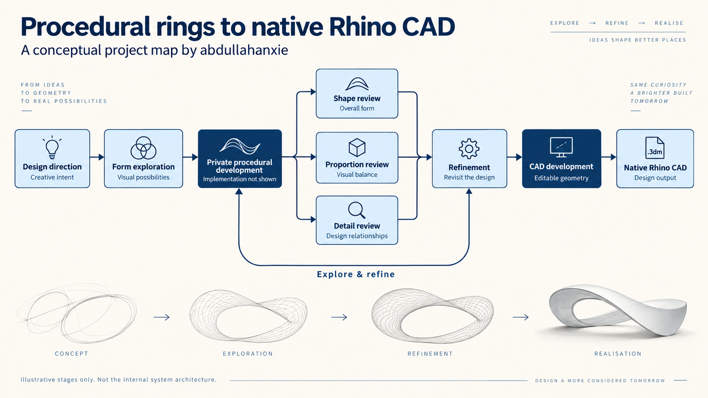

A builder’s journal / Jewelry & computational design
From procedural rings
to native Rhino CAD.
Six months of progress. One demanding problem.
The journey my team and I have been building.

As more creative work moves into 3D, jewelry keeps reminding us how much the details matter. A ring is a small object, but building a system that can generate its geometry consistently is a substantial engineering challenge.
Around six months ago, my team and I built a workflow that generated 3D rings. That was an important milestone. Today, we have extended that work to native Rhino CAD, bringing the geometry into a format that can be opened, inspected, and edited in Rhino.
This is the story of that progression—and why it has been the most demanding automation project I have worked on.
01 / The beginning
From garment automation
to a different kind of precision.
Recently, I have worked on automation pipelines for J., Sitara, Kollective Moda, and other garment businesses. Those projects shaped how I approach automation: understand the product, respect its details, and build a process that can repeat useful work.
Jewelry brought a different set of demands. A ring has to hold together as a three-dimensional design. The band, setting, and stones have relationships that become obvious as soon as the object is viewed from another angle.
That is what drew me into procedural ring generation. My team and I wanted to build a system that could turn design intent into ring geometry, then keep developing that geometry into something useful for CAD work.
02 / The challenge
Small object.
Very little room for error.
Jewelry compresses a surprising amount of complexity into a small space. A slight change in proportion can alter the character of a design. A connection that looks acceptable from one view may be wrong from another. Curves, symmetry, stone placement, and the way parts meet all need attention.
Procedural design adds another responsibility: the logic has to produce coherent results as the design changes. Solving one ring is a milestone; making a workflow useful across variations is a deeper challenge.
Generating the ring was the first milestone. Extending that work into native Rhino CAD became the harder one.
03 / The breakthrough
The move into native Rhino CAD.
The latest stage of our work produces native Rhino .3dm files with CAD geometry. For me, that is the breakthrough: taking the procedural work into an environment where the resulting design can be examined and developed further.
Getting there pushed us to think more carefully about geometry, consistency, and how a ring’s individual elements relate to one another. It has been the most difficult part of this project, and the part I am proudest to share.
CAD output is an important step in the design process. Each piece still needs appropriate checks for dimensions, tolerances, stone fit, and the intended manufacturing method before production.
04 / The perspective
Sharing the milestone.
Keeping the implementation private.
The diagram above uses illustrative design stages, review branches, and a refinement loop to communicate the journey. These are broad concepts, not a map of the actual implementation. It does not disclose the system’s internal architecture or provide instructions for reproducing it.
Algorithmic jewelry design has an established history. Rhino’s jewelry resources include parametric and generative approaches. This article documents our own implementation and the progress my team and I have made.
For anyone exploring how to make CAD jewelry, our experience points to a demanding part of the problem: preserving design intent while building geometry that can support further CAD work.
We reached ring generation around six months ago. Now we have taken the next step into native Rhino CAD. I wanted to put my name, and my team’s contribution, alongside that work.